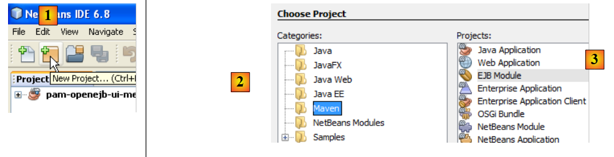
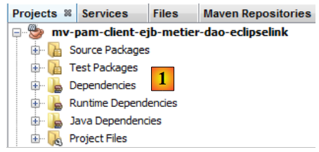
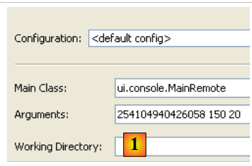

7. Version 3 : Portage de l'application PAM sur un serveur d'applications Glassfish
On se propose de placer les EJB des couches [metier] et [DAO] de l'architecture OpenEJB / EclipseLink dans le conteneur d'un serveur d'applications Glassfish.
L'implémentation actuelle avec OpenEJB / EclipseLink
 |
Ci-dessus, la couche [ui] utilise l'interface distante de la couche [metier].
Nous avons testé deux contextes d'exécution : local et distant. Dans ce dernier mode, la couche [ui] était cliente de la couche [metier], couche implémentée par des EJB. Pour fonctionner en mode client / serveur, dans lequel le client et le serveur s'exécutent dans deux JVM différentes, nous allons placer les couches [metier, DAO, jpa] sur le serveur Java EE Glassfish. Ce serveur est livré avec Netbeans.
L'implémentation à construire avec le serveur Glassfish
 |
- la couche [ui] s'exécutera dans un environnement Java SE (Standard Edition)
- les couches [metier, DAO, JPA] s'exécuteront dans un environnement Java EE (Enterprise Edition) sur un serveur Glassfish v3
- le client communiquera avec le serveur via un réseau tcp-ip. Les échanges réseau sont transparents pour le développeur, si ce n'est qu'il doit être quand même conscient que le client et le serveur s'échangent des objets sérialisés pour communiquer et non des références d'objets. Le protocole réseau utilisé pour ces échanges s'appelle RMI (Remote Method Invocation), un protocole utilisable uniquement entre deux applications Java.
- l'implémentation JPA utilisée sur le serveur Glassfish sera EclipseLink.
7.1. La partie serveur de l'application client / serveur PAM
7.1.1. L'architecture de l'application
Nous étudions ici la partie serveur qui sera hébergée par le conteneur EJB3 du serveur Glassfish :
 |
Il s'agit de faire un portage vers le serveur Glassfish de ce qui a déjà été fait et testé avec le conteneur OpenEJB. C'est là l'intérêt de OpenEJB et en général des conteneurs EJB embarqués : ils nous permettent de tester l'application dans un environnement d'exécution simplifié. Lorsque l'application a été testée, il ne reste plus qu'à la porter sur un serveur cible, ici le serveur Glassfish.
7.1.1.1. Le projet Netbeans
Commençons par créer un nouveau projet Netbeans :
 |
- en [1], nouveau projet
- en [2], choisir la catégorie Maven et en [3] le type EJB Module. Il s'agit en effet de construire un projet qui sera hébergé et exécuté par un conteneur EJB, celui du serveur Glassfish.
 |
- avec le bouton [4a], choisir le dossier parent du dossier du projet ou taper son nom directement en [4b].
- en [5], donner un nom au projet
- en [6], choisir le serveur d'application sur lequel il sera exécuté. Celui choisi ici est l'un de ceux visibles dans l'onglet [Runtime / Servers], ici Glassfish v3.
- en [7], choisir la version de Java EE.
 |
- en [1], le nouveau projet. Il diffère d'un projet Java classique par quelques points :
- une branche [Other Sources] [2] est automatiquement créée. Elle contiendra notamment le fichier [persistence.xml] qui configure la couche JPA,
- si on construit le projet (Build), on voit apparaître [3] une dépendance [javaee-api-6.0]. Elle est de type provided car elle est fournie à l'exécution par le conteneur EJB de Glassfish.
7.1.1.2. Configuration de la couche de persistance
Par configuration de la couche de persistance, nous entendons l'écriture du fichier [persistence.xml] qui définit :
- l'implémentation JPA à utiliser
- la définition de la source de données exploitée par la couche JPA. Celle-ci sera une source JDBC gérée par le serveur Glassfish.
 |
On pourra procéder comme suit. Tout d'abord, dans l'onglet [Runtime / Databases], on créera [1] une connexion sur la base MySQL5 / dbpam_eclipselink :
 |
Ceci fait, on peut passer à la création de la ressource JDBC utilisée par le module EJB :
 |
- en [1], créer un nouveau fichier – on s'assurera que le projet EJB est sélectionné avant de faire cette opération
- en [2], le projet EJB
- en [3], on sélectionne la catégorie [Glassfish]
- en [4], on veut créer une ressource JDBC
 |
- en [5], indiquer que la ressource JDBC va utiliser un nouveau pool de connexions. On rappelle qu'un pool de connexions est un pool de connexions ouvertes qui sert à accélérer les échanges de l'application avec la base de données.
- en [6], donner un nom JNDI à la ressource JDBC créée. Ce nom peut être quelconque mais il a souvent la forme jdbc/nom. Ce nom JNDI sera utilisé dans le fichier [persistence.xml] pour désigner la source de données que l'implémentation JPA doit utiliser.
- en [7], donner un nom qui peut être quelconque au pool de connexions qui va être créé
- dans la liste déroulante [8], choisir la connexion JDBC créée précédemment sur la base MySQL / dbpam_eclipselink.
- en [9], un récapitulatif des propriétés du pool de connexions - on ne touche à rien
 |
- en [10], on peut préciser plusieurs des propriétés du pool de connexions - on laisse les valeurs par défaut
- en [11], à l'issue de l'assistant de création d'une ressource JDBC pour le module EJB, un fichier [glassfish-resources.xml] a été créée dans la branche [Other Sources]. Le contenu de ce fichier est le suivant :
<?xml version="1.0" encoding="UTF-8"?>
<!DOCTYPE resources PUBLIC "-//GlassFish.org//DTD GlassFish Application Server 3.1 Resource Definitions//EN" "http://glassfish.org/dtds/glassfish-resources_1_5.dtd">
<resources>
<jdbc-resource enabled="true" jndi-name="jdbc/dbpam_eclipselink" object-type="user" pool-name="dbpamEclipselinkConnectionPool">
<description/>
</jdbc-resource>
<jdbc-connection-pool allow-non-component-callers="false" associate-with-thread="false" connection-creation-retry-attempts="0" connection-creation-retry-interval-in-seconds="10" connection-leak-reclaim="false" connection-leak-timeout-in-seconds="0" connection-validation-method="auto-commit" datasource-classname="com.mysql.jdbc.jdbc2.optional.MysqlDataSource" fail-all-connections="false" idle-timeout-in-seconds="300" is-connection-validation-required="false" is-isolation-level-guaranteed="true" lazy-connection-association="false" lazy-connection-enlistment="false" match-connections="false" max-connection-usage-count="0" max-pool-size="32" max-wait-time-in-millis="60000" name="dbpamEclipselinkConnectionPool" non-transactional-connections="false" pool-resize-quantity="2" res-type="javax.sql.DataSource" statement-timeout-in-seconds="-1" steady-pool-size="8" validate-atmost-once-period-in-seconds="0" wrap-jdbc-objects="false">
<property name="URL" value="jdbc:mysql://localhost:3306/dbpam_eclipselink"/>
<property name="User" value="root"/>
<property name="Password" value=""/>
</jdbc-connection-pool>
</resources>
Le fichier [glassfish-resources.xml] est un fichier XML qui reprend toutes les données collectées par l'assistant. Il va être utilisé par Netbeans pour, lors du déploiement du module EJB sur le serveur Glassfish, demander la création de la ressource JDBC dont a besoin ce module.
On peut désormais créer le fichier [persistence.xml] qui va configurer la couche JPA du module EJB :
 |
- en [1], créer un nouveau fichier – on s'assurera que le projet EJB est sélectionné avant de faire cette opération
- en [2], le projet EJB
- en [3], on sélectionne la catégorie [Persistence]
- en [4], on veut créer une unité de persistance
 |
- en [5], donner un nom à l'unité de persistance
- en [6], plusieurs implémentations JPA sont proposées. On choisira ici [EclipseLink]. D'autres implémentations sont utilisables à condition de mettre les bibliothèques qui les implémentent avec celles du serveur Glassfish.
- dans la liste déroulante [7], choisir la source de données JDBC [jdbc/dbpam_eclipselink] qui vient d'être créée.
- en [8], indiquer que les transactions sont gérées par le conteneur EJB
- en [9], indiquer qu'aucune opération ne doit être faite sur la source de données lors du déploiement du module EJB sur le serveur. En effet, le module EJB va utiliser une base [dbpam_eclipselink] déjà créée.
- à la fin de l'assistant, un fichier [persistence.xml] a été créé [10]. Son contenu est le suivant :
<?xml version="1.0" encoding="UTF-8"?>
<persistence version="2.0" xmlns="http://java.sun.com/xml/ns/persistence" xmlns:xsi="http://www.w3.org/2001/XMLSchema-instance" xsi:schemaLocation="http://java.sun.com/xml/ns/persistence http://java.sun.com/xml/ns/persistence/persistence_2_0.xsd">
<persistence-unit name="mv-pam-ejb-metier-dao-eclipselinkPU" transaction-type="JTA">
<jta-data-source>jdbc/dbpam_eclipselink</jta-data-source>
<exclude-unlisted-classes>false</exclude-unlisted-classes>
<properties/>
</persistence-unit>
</persistence>
- ligne 3 : le nom de l'unité de persistance [mv-pam-ejb-metier-dao-eclipselinkPU] et le type de transactions (JTA pour un conteneur EJB)
- ligne 5 : le nom JNDI de la source de données utilisée par la couche de persistance : jdbc/dbpam_eclipselink
- ligne 6 : les entités JPA ne sont pas précisées. Elles seront cherchées dans le Classpath du module EJB.
- le nom de l'implémentation JPA (Hibernate, EclipseLink, ...) utilisée n'est pas indiquée. Dans ce cas, Glassfish v3 utilise par défaut EclipseLink.
7.1.1.3. Insertion des couches [jpa, DAO, metier]
Maintenant que le fichier [persistence.xml] a été défini, nous pouvons passer à l'insertion dans le projet des couches [metier, dao, jpa] de l'application d'entreprise [pam] :
 |
Ces trois couches sont identiques à ce qu'elles étaient avec OpenEJB. On peut procéder à un simple copier / coller entre les deux projets. C'est ce que nous faisons maintenant :
 |
- en [1], le résultat de la copie des paquetages [jpa, dao, metier, exception] du projet [mv-pam-openejb-eclipselink] dans le module EJB [mv-pam-ejb-metier-dao-jpa-eclipselink]
7.1.1.4. Configuration du serveur Glassfish
Il nous reste à configurer le serveur Glassfish sur deux points :
- la couche JPA est implémentée par EclipseLink. Il faut nous assurer que le serveur Glassfish a les bibliothèques de cette implémentation JPA.
- la source de données est une base MySQL. Il faut nous assurer que le serveur Glassfish a le pilote JDBC de ce SGBD.
On peut découvrir l'absence de ces bibliothèques lors du déploiement du module EJB. Voici une façon de procéder parmi d'autres pour ajouter des bibliothèques manquantes au serveur Glassfish :
 |
- en [1], visualiser les propriétés du serveur Glassfish
- en [2], noter le dossier des domaines du serveur. Nous le notons par la suite <domains>
- dans le dossier <domains>\domain1\lib, mettre les bibliothèques manquantes. Dans l'exemple, les bibliothèques d'Hibernate (lib / hibernate-tools) et le pilote JDBC de MySQL (lib / divers) ont été rajoutés. Par défaut, le serveur Glassfish a les bibliothèques d'EclipseLink. On ne rajoutera donc que le pilote JDBC de MySQL.
 |
- en [1], dans l'onglet [Services], nous lançons le serveur Glassfish v3
- en [2], il est actif
7.1.1.5. Déploiement du module EJB
Nous déployons maintenant le module EJB sur le serveur Glassfish :
 |
- en [1], le module EJB est déployé
- en [2], l'arborescence du serveur Glassfish est rafraîchie
- en [3], après déploiement, le module EJB apparaît dans la branche [Applications] du serveur Glassfish
- en [4], la ressource JDBC [jdbc / dbpam_eclipselink] a été créée sur le serveur Glassfish. On rappelle que nous l'avions définie paragraphe 7.1.1.2.
Lors du déploiement, le serveur Glassfish logue dans la console des informations intéressantes :
On notera aux lignes
- 3, 6, 8 et 11 les noms portables JNDI des EJB déployés. Java EE 6 a introduit la notion de nom JNDI portable. Cela dénote un nom JNDI reconnu par tous les serveurs Java EE 6. Avec Java EE 5, les noms JNDI sont spécifiques au serveur utilisé.
- 4, 7, 9, 12 : les noms JNDI des EJB déployés sous une forme spécifique à Glassfish v3.
Ces noms seront utiles à l'application console que nous allons écrire pour utiliser le module EJB déployé.
7.2. Client console - version 1
Maintenant que nous avons déployé la partie serveur de notre application client / serveur, nous en venons à étudier la partie client [1] :
 |
7.2.1. Le projet du client
Nous créons un nouveau projet Maven de type [Java Application] nommé [mv-pam-client-ejb-metier-dao-eclipselink] :
 |
- en [1], le projet du client
Dans le fichier [pom.xml], nous ajoutons les dépendances suivantes :
<project xmlns="http://maven.apache.org/POM/4.0.0" xmlns:xsi="http://www.w3.org/2001/XMLSchema-instance"
xsi:schemaLocation="http://maven.apache.org/POM/4.0.0 http://maven.apache.org/xsd/maven-4.0.0.xsd">
<modelVersion>4.0.0</modelVersion>
<groupId>istia.st</groupId>
<artifactId>mv-pam-client-ejb-metier-dao-eclipselink</artifactId>
<version>1.0-SNAPSHOT</version>
<packaging>jar</packaging>
<name>mv-pam-client-ejb-metier-dao-eclipselink</name>
<url>http://maven.apache.org</url>
<repositories>
<repository>
<url>http://download.eclipse.org/rt/eclipselink/maven.repo/</url>
<id>eclipselink</id>
<layout>default</layout>
<name>Repository for library Library[eclipselink]</name>
</repository>
<repository>
<url>http://repo1.maven.org/maven2/</url>
<id>swing-layout</id>
<layout>default</layout>
<name>Repository for library Library[swing-layout]</name>
</repository>
</repositories>
<properties>
<project.build.sourceEncoding>UTF-8</project.build.sourceEncoding>
</properties>
<dependencies>
<dependency>
<groupId>org.glassfish.appclient</groupId>
<artifactId>gf-client</artifactId>
<version>3.1.1</version>
</dependency>
<dependency>
<groupId>${project.groupId}</groupId>
<artifactId>mv-pam-ejb-metier-dao-eclipselink</artifactId>
<version>${project.version}</version>
<type>ejb</type>
</dependency>
<dependency>
<groupId>org.swinglabs</groupId>
<artifactId>swing-layout</artifactId>
<version>1.0.3</version>
</dependency>
</dependencies>
</project>
- lignes 31-35 : la dépendance sur la bibliothèque [gf-client] qui permet à un client Classfish de communiquer avec un serveur distant,
- lignes 36-41 : la dépendance sur le projet Maven du module EJB. Nous voulons récupérer ici les définitions des entités JPA et celles des différentes interfaces ainsi que celle de la classe d'exception [PamException],
A partir du projet [mv-pam-openejb-eclipselink], nous copions la classe [MainRemote] :
 |
La classe [MainRemote] doit obtenir une référence sur l'EJB de la couche [metier]. Le code de la classe [MainRemote] évolue de la façon suivante :
// c'est bon - on peut demander la feuille de salaire
FeuilleSalaire feuilleSalaire = null;
IMetierRemote metier = null;
try {
// contexte JNDI du serveur Glassfish
InitialContext initialContext = new InitialContext();
// instanciation couche métier
metier = (IMetierRemote) initialContext.lookup("java:global/istia.st_mv-pam-ejb-metier-dao-eclipselink_ejb_1.0-SNAPSHOT/Metier!metier.IMetierRemote");
// calcul de la feuille de salaire
feuilleSalaire = metier.calculerFeuilleSalaire(args[0], nbHeuresTravaillées, nbJoursTravaillés);
} catch (PamException ex) {
System.err.println("L'erreur suivante s'est produite : "
+ ex.getMessage());
return;
} catch (Exception ex) {
System.err.println("L'erreur suivante s'est produite : "
+ ex.toString());
return;
}
- ligne 6 : initialisation du contexte JNDI du serveur Glassfish.
- ligne 8 : on demande à ce contexte JNDI une référence sur l'interface distante de la couche [metier]. D'après les logs de Glassfish, on sait que l'interface distante de la couche [metier] a deux noms possibles :
Ligne 1, le nom JNDI utilisable avec tout serveur d'applications JAVA EE 6. Ligne 2, le nom JNDI spécifique à Glassfish. Dans le code, ligne 9, nous utilisons le nom JNDI portable.
- le reste du code ne change pas
 |
En [1], on configure le projet pour qu'il exécute la classe [MainRemote] avec des arguments. Si tout va bien, l'exécution du projet donne le résultat suivant :
Si dans les propriétés, on met un n° de sécurité sociale incorrect, on obtient le résultat suivant :
7.3. Client console - version 2
Dans les versions précédentes, l'environnement JNDI du serveur Glassfish était configuré à partir d'un fichier [jndi.properties] trouvé quelque part dans les archives du projet. Son contenu par défaut est le suivant :
# accès JNDI à Sun Application Server
java.naming.factory.initial=com.sun.enterprise.naming.SerialInitContextFactory
java.naming.factory.url.pkgs=com.sun.enterprise.naming
# Required to add a javax.naming.spi.StateFactory for CosNaming that
# supports dynamic RMI-IIOP.
java.naming.factory.state=com.sun.corba.ee.impl.presentation.rmi.JNDIStateFactoryImpl
org.omg.CORBA.ORBInitialHost=localhost
org.omg.CORBA.ORBInitialPort=3700
Les lignes 7 et 8 désignent la machine du service JNDI et le port d'écoute de celui-ci. Ce fichier ne permet pas d'interroger un serveur JNDI autre que localhost ou travaillant sur un port autre que le port 3700. Si on veut changer ces deux paramètres, on peut construire son propre fichier [jndi.properties] ou utiliser une configuration Spring. Nous montrons cette deuxième technnique.
Nous commençons par créer un nouveau projet à partir du projet [pam-client-metier-dao-jpa-eclipselink] initial.
 |
- en [1], le nouveau projet
- en [2], le fichier [spring-config-client.xml] de configuration de Spring. Son contenu est le suivant :
Le fichier de configuration de Spring est le suivant :
<?xml version="1.0" encoding="UTF-8"?>
<beans xmlns="http://www.springframework.org/schema/beans" xmlns:xsi="http://www.w3.org/2001/XMLSchema-instance"
xmlns:tx="http://www.springframework.org/schema/tx"
xmlns:jee="http://www.springframework.org/schema/jee"
xsi:schemaLocation="
http://www.springframework.org/schema/beans
http://www.springframework.org/schema/beans/spring-beans-2.0.xsd
http://www.springframework.org/schema/tx
http://www.springframework.org/schema/tx/spring-tx-2.0.xsd
http://www.springframework.org/schema/jee
http://www.springframework.org/schema/jee/spring-jee-2.0.xsd">
<!-- métier -->
<jee:jndi-lookup id="metier" jndi-name="java:global/istia.st_mv-pam-ejb-metier-dao-eclipselink_ejb_1.0-SNAPSHOT/Metier!metier.IMetierRemote">
<jee:environment>
java.naming.factory.initial=com.sun.enterprise.naming.SerialInitContextFactory
java.naming.factory.url.pkgs=com.sun.enterprise.naming
java.naming.factory.state=com.sun.corba.ee.impl.presentation.rmi.JNDIStateFactoryImpl
org.omg.CORBA.ORBInitialHost=localhost
org.omg.CORBA.ORBInitialPort=3700
</jee:environment>
</jee:jndi-lookup>
</beans>
Nous utilisons ici une balise <jee> (ligne 14) apparue avec Spring 2.0. L'usage de cette balise nécessite la définition du schéma auquel elle appartient, lignes 4, 10 et 11.
- ligne 14 : la balise <jee:jndi-lookup> permet d'obtenir la référence d'un objet auprès d'un service JNDI. Ici, on associe le bean nommé " metier " à la ressource JNDI associée à l'EJB [Metier]. Le nom JNDI utilisé ici est le nom portable (Java EE 6) de l'EJB.
- le contenu du fichier [jndi.properties] devient le contenu de la balise <jee:environment> (ligne 15) qui sert à définir les paramètres de connexion au service JNDI.
La classe principale [MainRemote] évolue de la façon suivante :
Lignes 7-8, la référence de type [IMetierRemote] sur la couche [metier] est demandée à Spring. Cette solution amène de la souplesse dans notre architecture. En effet, si l'EJB de la couche [metier] devenait local, c.a.d. exécuté dans la même JVM que notre client [MainRemote], le code de celui-ci ne changerait pas. Seul le contenu du fichier [spring-config-client.xml] changerait. On retrouverait alors une configuration analogue à l'architecture Spring / JPA étudiée au paragraphe 5.11.
Le lecteur est invité à tester cette nouvelle version.
7.4. Le client Swing
Nous construisons maintenant le client swing de notre application client / serveur EJB.
 |
Le fichier [pom.xml] doit avoir la dépendance nécessaire aux applications swing :
<dependency>
<groupId>org.swinglabs</groupId>
<artifactId>swing-layout</artifactId>
<version>1.0.3</version>
</dependency>
Ci-dessus, la classe [PamJFrame] avait été écrite initialement pour s'exécuter dans un environnement Spring / JPA :
 |
Maintenant cette classe doit devenir le client distant d'un EJB déployé sur le serveur Glassfish.
 |
Travail pratique : en suivant l'exemple du client console [ui.console.MainRemote] du projet, modifier la façon utilisée par la méthode [doMyInit] (cf paragraphe 5.12.4) de la classe [PamJFrame] pour acquérir une référence sur la couche [metier] qui est maintenant distante.